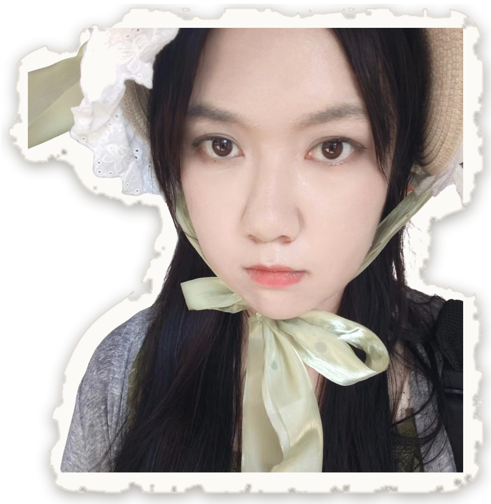
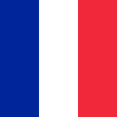
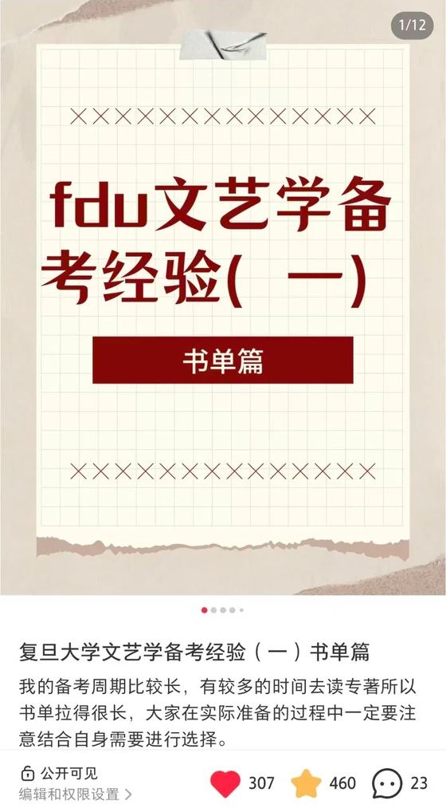
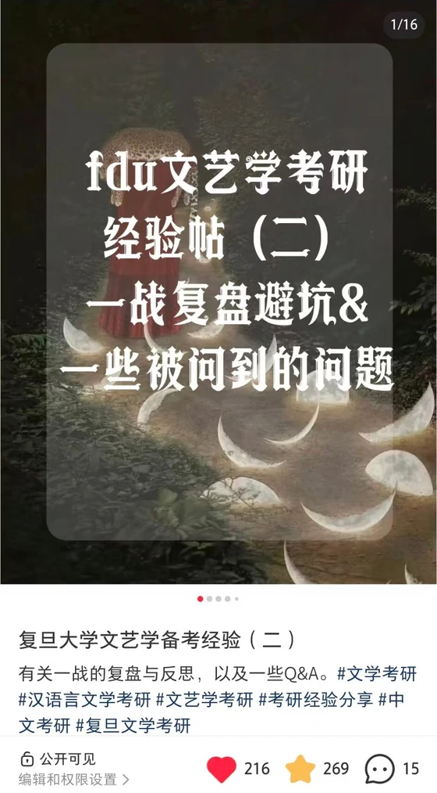
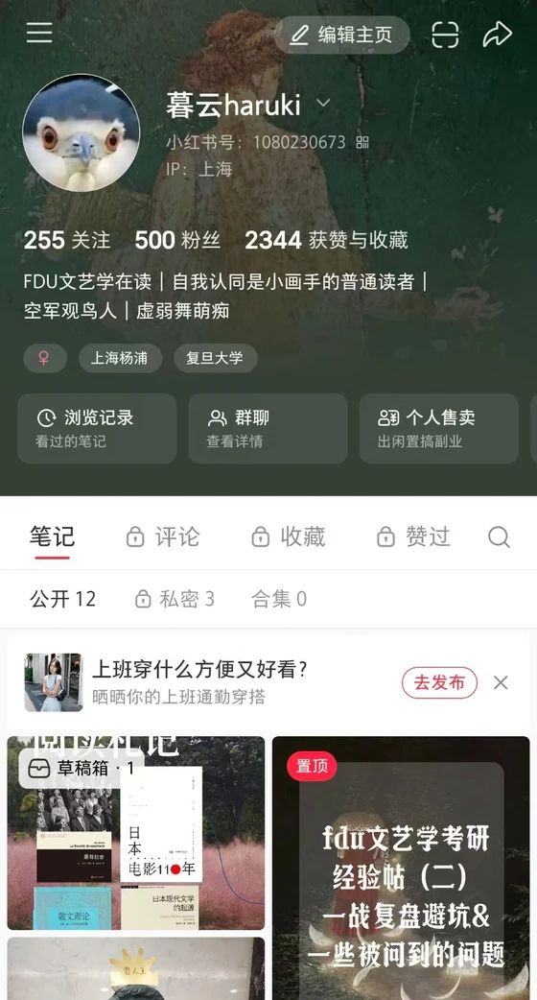
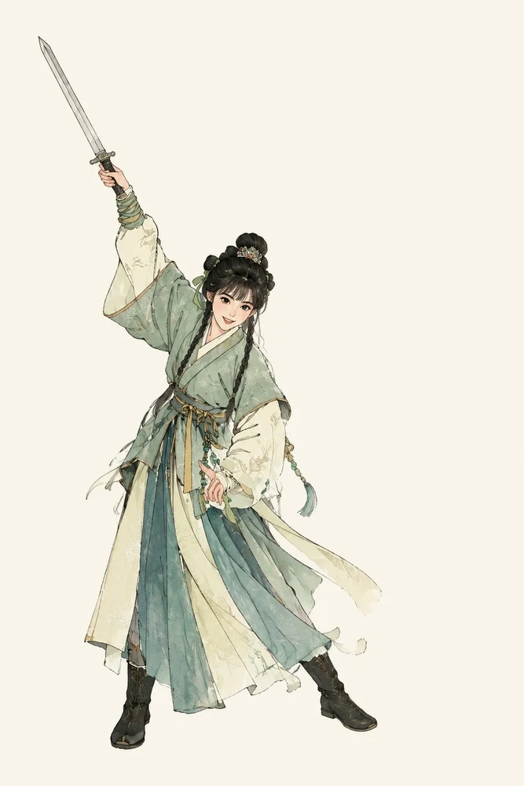

教育背景
-
硕士
 复旦大学（985）· 中国语言文学系（文艺学方向）2025.09 — 至今GPA 3.63/4 ｜ 研究方向：马克思主义美学与批判理论核心课程：现代西方文论述评、中国现当代文学史论、电影艺术概论、中西诗学的本体论与语言论研究
复旦大学（985）· 中国语言文学系（文艺学方向）2025.09 — 至今GPA 3.63/4 ｜ 研究方向：马克思主义美学与批判理论核心课程：现代西方文论述评、中国现当代文学史论、电影艺术概论、中西诗学的本体论与语言论研究
-
本科
 山西大学（双一流）· 新闻学新闻传播类2020.09 — 2024.06GPA 88.93
山西大学（双一流）· 新闻学新闻传播类2020.09 — 2024.06GPA 88.93


从“读书人”到“做书人”，在读客当代文库的实习经历使我更加贴近文学现场。这次实战经验也教会了我，如何在真实的消费者中验证营销策略、如何通过策划组稿让一本书真正“活”起来。（收获了莫言老师的to签嘿嘿～）

法语入门


共 33 件作品 · 点击图片可查看大图



问题真因
读客文化有限公司的员工需要在每周梳理自己在工作中遇到的卡点，并将其整理成包含“问题描述”“改进方案”“达成预期”的工作提案。但在飞书中翻找对话并撰写提案需要耗费大量时间。
核心指令
问题真因
“读客熊猫君”微博账号的长短文案和九宫格种草图需要花费大量精力制作。
核心指令
「古龙江湖 · 人员密档」整套视觉：人物设定、档案卡与礼盒包装，先由文字描述逐一生成，再落到实物。
